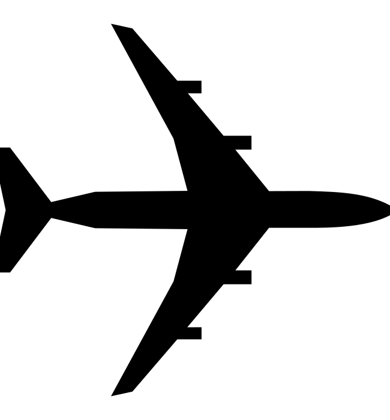
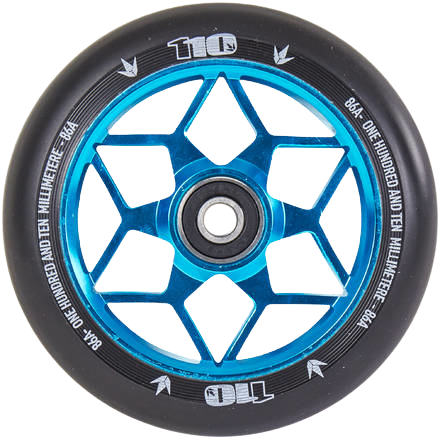
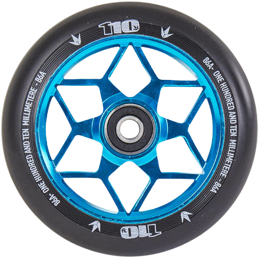

1 - Estat inicial: Quadrat de color vermell
2 - Estat inicial: Cercle de color vermell
Estat final: Cercle de color vermell
El cercle es desplaça un cop en el sentit de les agulles del rellotge, i un altre cop en sentit invers.
3 - Estat inicial: Quadrats de color vermell a l'esquerra
Estat final: Quadrats de color vermell a la dreta més pausa
Els quadrats es desplacen a cap a la dreta + pausa + tornen a l'esquerra. Cada quadrat utilitza un tipus de velocitat diferent.
linear
ease
ease-in
ease-out
ease-in-out
5 - Implementar un rellotge: podeu moure les agulles en temps real o bé accelerar el temps perquè el moviment sigui més ràpid (com la imatge del gif animat que podeu veure a continuació). Recordeu d'utilitzar la propietat CSS transform per fer la rotació.
8 - Crea una animació per simular el vol d'un avio des de Lleida fins a Roma

10 - Crea una animació per simular el desplaçament d'un autocar:
 
